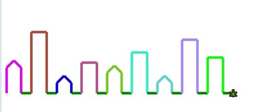

Houses

1. Have a robot start on the left side of the window near the bottom.
2. Draw a flat-topped house of height 100 with grass after it (see picture).
3. Extract the piece of code that draws the house into a method. Draw 10 houses.
4. Change the method to take (int height) as a parameter. Draw 9 houses of different heights
5. Make the method take a String instead of an int.
“small” 60
“medium”
120
“large”
250
6. Make the method take a color as well as a height. The houses are drawn in that color.
[optional] Set the scene to night by setting the background to black
7. Give the houses peaked roofs
8. Extract that roof code into a method “drawPointyRoof” and create a new method: “drawFlatRoof”.
9. Make large houses have flat roofs